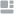

<section class="side-menu">
    <div class="side-menu__div">
        
        <label class="side-menu__label">
            <input class="side-menu__input" type="checkbox" checked (change)="onCheckboxClick()">
            
        </label>
    </div>
    <nav class="side-menu__nav">
        <ul class="side-menu__list">
            <li class="side-menu__item"><a class="side-menu__link" routerLink="/"> Home</a></li>
            @if(userRole === 'student' || userRole === 'studentTeacher'){
                <li class="side-menu__item"><a class="side-menu__link" routerLink="/Tasks"> Tasks</a></li>
            }
            @if(userRole === 'teacher' || userRole === 'studentTeacher') {
                <li class="side-menu__item"><a class="side-menu__link" routerLink="/Subjects"> Subjects</a></li>
            }
            <li class="side-menu__item"><a class="side-menu__link" routerLink="/Profile"> Profile</a></li>
            <li class="side-menu__item"><a class="side-menu__link" routerLink="/Contact"> Contact info</a></li>
        </ul>
    </nav>
</section>